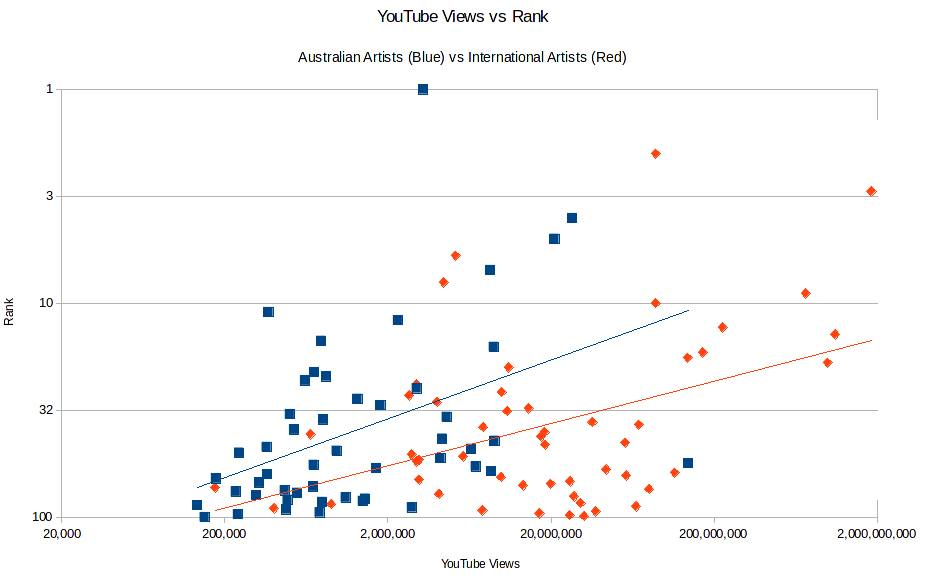

YouTube Views
Following Sunday’s verdict that airtime doesn’t really predict winners but yesterdays hypothesis that the release of Like a Version songs on YouTube has put them on the chart, I thought that I would try instead to use YouTube views as a measure of a songs popularity. Let’s get some of the caveats out of the way up front. I only have the number of views in the present, not at the time Hottest 100 voting was occurring and I’m only going to do 2015 because do you know how long it took to look up a hundred songs on YouTube and put the numbers in a spreadsheet?! In a unrelated note, does anyone know any good hobbies? I’m asking for a friend.
Anyway. Did you know that “Lean On” has 1.8 billion views on YouTube? That’s billion with a B. Insane. How are we meant to compare a song with a billion views with “Party Machine” by The Bennies that has a little over a hundred thousand views. Luckily, we have maths. The trick is to not use the numbers themselves, but instead count the number of zeros. Since “Lean On” is in the billions (1,000,000,000), that’s nine zeroes and it gets a score of 9. Similarly “Party Machine” is in the hundreds of thousands (100,000) gets a score of 5. These scores are in the same ball-park, so it’s possible to compare them sensibly. This is exactly how the Richter Scale works too. You measure how much the needle on the seismograph moves in micrometres (that machine with the moving bit of paper and a wobbly needle with a pen on the end. Like a lie detector machine), and then count the number of zeroes it has. For example, a magnitude 5 earthquake moves the needle by 100,000 μm = 10 cm. So where does the decimal places in a magnitude 5.2 earthquake come from? From Logarithms. It’s because mathematically the operation of counting the number of zeroes is taking a logarithm. It’s the log button on your calculator. Go ahead and try it. Log 100 = 2. See, I told you.
We have the reverse problem when we want to compare songs based on their rankings. This time the problem is not that the gaps are too big, but that they are too small. The difference in popularity between the first and the tenth songs is a lot bigger than the difference in popularity between the ninety-first and the hundredth, even though they are both ten ranks apart. But logarithms solve this problem too because they’re magic (actually though it’s to do with power laws; see the extended version of my first post). So we should graph the logarithm of rank against the logarithm of YouTube views. Doing this log-log comparison is super common, so excel has a built in function to do this in the graphs automatically. Always read the scale carefully, and see your doctor if symptoms persist. If we look at the first picture, we see a broad upwards trend. This is too be expected; as the number of views increases, so too should the position in the Hottest 100.
If you squint hard enough, you can actually see two lines. Looking at the raw numbers, the songs with the most views were “Lean On” and “Hotline Bling”, both big international hits. We should therefore separate the Australian songs from the International ones. This gives the next graph, which has the trend lines shown. One can measure how close some data is to being a straight line by calculating the correlation. The correlation coefficients for both sets of data are 0.42 (on a scale from 0 to 1). This is about the same level of correlation as between university entrance exams and first year results. So it gives a decent indication, but isn’t perfect.

The explanation for why international songs have more views is obvious, there are a lot more people in the world than in just Australia. International songs that make it here probably also make it in other countries too, hence the huge audience. Conversely, an Australian song doesn’t need to as many YouTube views to do well in the Hottest 100, because a bigger fraction of the viewers are Australian and likely to vote in the poll.
There is a piece of data that would be super handy at this point: the raw number of votes for each song. Unfortunately, Triple J only announces the total number of votes cast. The closest I can find of them saying how many votes were cast for a particular song was in 2007 when there was 13 votes separating Muse and Silverchair for the top spot. It’s my theory that a 10x increase in the number of YouTube views would correspond to a say 3x increase in the number of votes. But without having the vote totals there’s no way to figure out the exact ratios. I can make this comparison though. The increase in the number of votes is the same when an Australian song gets 10x as many YouTube views and when an International song gets 25x as many views. Aussie aussie aussie, oi oi oi!